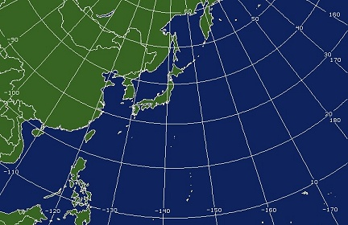

Description
What makes a tyhpoon a typhoon?
Inorder for a tropical cylcone to be called a "typhoon" it has to be formed in the Northwest of the Pacific Ocean.
Winds must reach a speed of 33 meters per second (M/S) or 118.8 kilometers per hour (KPH). If a tropical cyclone is formed
if the North Atlantic ocean or the Northeastern ocean it is considred a hurricane.

Northwest Pacific Ocean
The spin of the typhoon depends on what part of the hemisphere it is in. If the typhoon is in the northern hemisphere,
it will spin clockwise. If the typhoon is in the southern hemisphere, it will spin counter-clockwise.
Wind intensity
- Tropical depression: 0-62 KPH
- Tropical storm: 63-88 KPH [Typhoon]
- Severe Tropical Storm: 89-118 KPH [Typhoon]
- Strong Typhoon: 119-156 KPH
- Very Strong Typhoon: 157-192 KPH
- Violent Typhoon: 193+ KPH
Typhoons also come in different sizes. If the radius of a typhoon is 500km to 799km then it is considered a large typhoon.
If the typhoon has a radius of 800km or over it is considered a super typhoon.